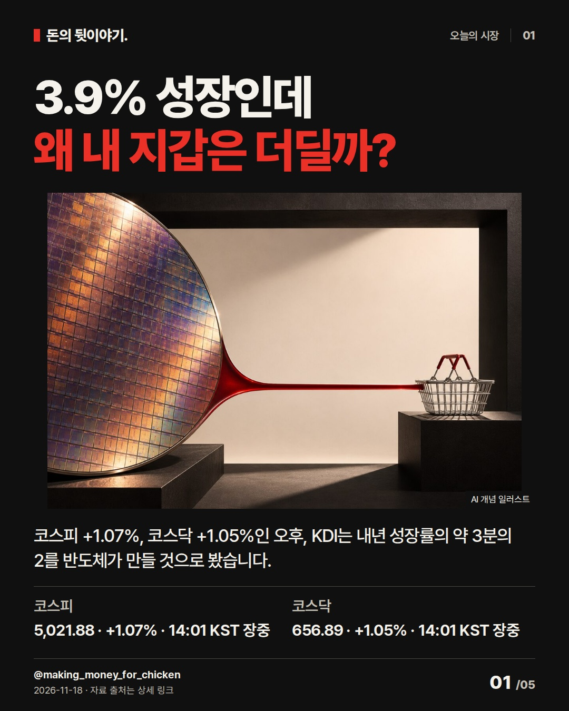
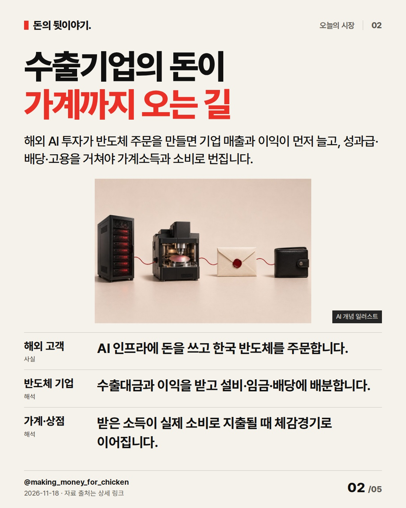
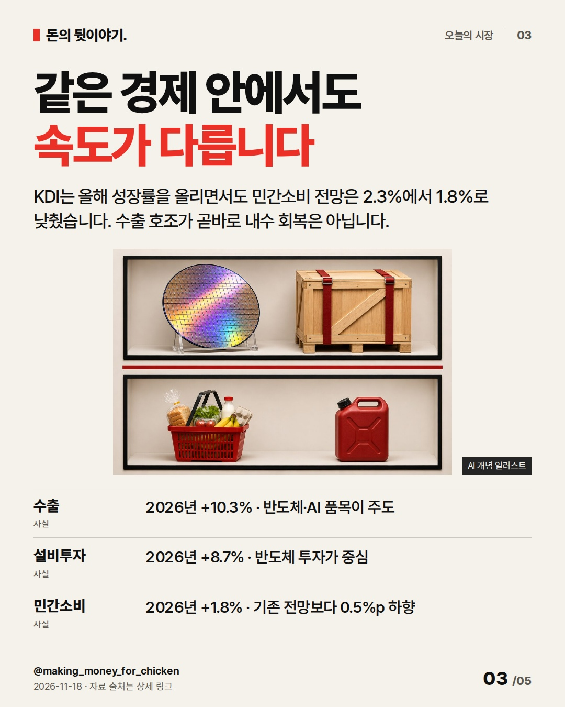
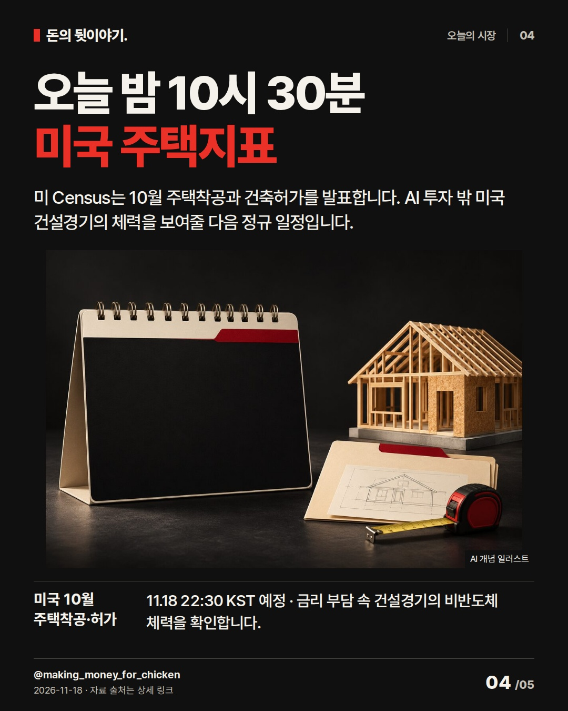
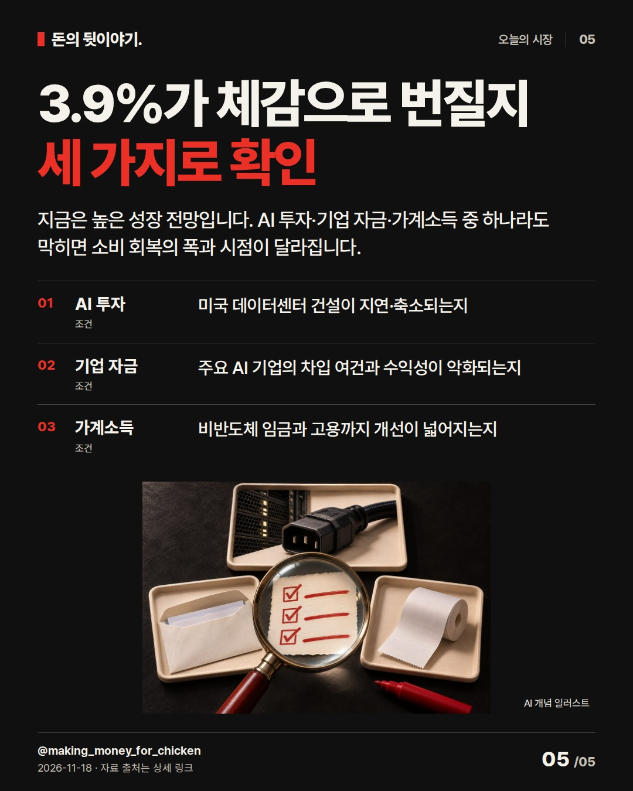

성장률 3.9%보다 더 중요한 건 그 돈이 누구에게, 언제 도착하느냐입니다. 반도체 수출에서 가계 소비까지의 좁은 길을 확인했습니다. #한국경제 #반도체 #민간소비

코스피 +1.07%, 코스닥 +1.05%인 오후, KDI는 내년 성장률의 약 3분의 2를 반도체가 만들 것으로 봤습니다.
AI 생성 개념 일러스트 · 실제 현장이나 공식 제품 사진이 아닙니다.

해외 AI 투자가 반도체 주문을 만들면 기업 매출과 이익이 먼저 늘고, 성과급·배당·고용을 거쳐야 가계소득과 소비로 번집니다.
AI 생성 개념 일러스트 · 실제 현장이나 공식 제품 사진이 아닙니다.

KDI는 올해 성장률을 올리면서도 민간소비 전망은 2.3%에서 1.8%로 낮췄습니다. 수출 호조가 곧바로 내수 회복은 아닙니다.
AI 생성 개념 일러스트 · 실제 현장이나 공식 제품 사진이 아닙니다.

미 Census는 10월 주택착공과 건축허가를 발표합니다. AI 투자 밖 미국 건설경기의 체력을 보여줄 다음 정규 일정입니다.
AI 생성 개념 일러스트 · 실제 현장이나 공식 제품 사진이 아닙니다.

지금은 높은 성장 전망입니다. AI 투자·기업 자금·가계소득 중 하나라도 막히면 소비 회복의 폭과 시점이 달라집니다.
AI 생성 개념 일러스트 · 실제 현장이나 공식 제품 사진이 아닙니다.
{
"improvement": "최근 5편은 정책·실적의 결론을 여러 장에서 반복하는 경향이 있었습니다. 이번에는 성장률 질문→돈의 이동→같은 기준 비교→미국 일정→판단 조건으로 장마다 역할을 분리했습니다.",
"reason": "불스토리 10월 웹 글 전체는 큰 수치 뒤 생산·공급 경로를 단계별로 풀었고, 김광석 개인 칼럼 전체는 총량과 체감경제를 분리했습니다. 실제 카드 전체를 본 것으로 과장하지 않고 웹 본문 배치만 참고했습니다.",
"application": "초안 ‘KDI, 내년 성장률 3.9%’→퇴고 ‘3.9% 성장인데 왜 내 지갑은 더딜까?’. 2장에 해외 고객→기업→가계의 돈 이동을 넣고, 3장은 수출·설비투자·소비를 같은 2026년 기준으로 비교했습니다.",
"avoided_repetition": "오전 엔비디아의 공급 약정·고객 자금 결론과 전날 원격 AI칩 규제 결론을 버렸습니다. 반도체 호황이 곧 내수주 상승이라는 단정과 장중 상승의 원인을 KDI 발표로 돌리는 문장도 제외했습니다. 다음 편은 임금·고용 확산 실측이 나올 때만 체감경기를 보완합니다. 반응 지표 미확보."
}투자 참고용 · 매수·매도 권유 아님.